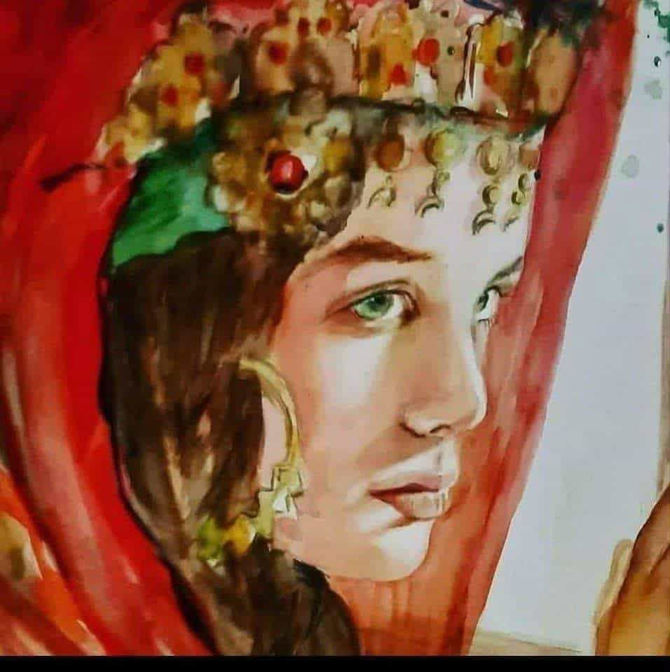

Sous le voile écarlate
Sous le voile écarlate
Un regard se déploie,
Vert d’azur
et de rêve,
Il effleure la joie,
Mais la retient encore —
Frêle,
Suspendue,
Comme une aurore
En prière contenue.
Lumière d’Atlas,
Fleur d’un autre âge,
Sur ton front dansent
L’or
et les mirages,
Tes bijoux murmurent
L’écho des ancêtres,
Des chants de noces,
Des routes,
Des fenêtres.
Tu sembles attendre
Un vent,
Une parole,
Un pas venu de loin
Qui te frôle…
Et tout ton silence
Brûle en offrande,
Comme un feu doux
Sous la cendre.
Ô fille du Sud,
âme de braise,
L‘artiste t’a peinte
dans ta parenthèse :
Entre hier
et demain,
que l’instant demeure,
Beau comme un serment,
fragile comme une fleur.
Djamel Metref
At Yenni le 20 octobre 2025
Portrait © Reche Safia "Pleine lune"

← Tous les poèmes